Praesidium 2021-2022

Praeses
Xander Pauwels

Vice-Praeses
Asia Vanderpoorten

Penning
Thomas Geldof

Feest
Tania Gulamrezazadeh

Temmer
Emma De Vidts

Secretaris
Michiel Lammerant

Zeden
mathias Blontrock
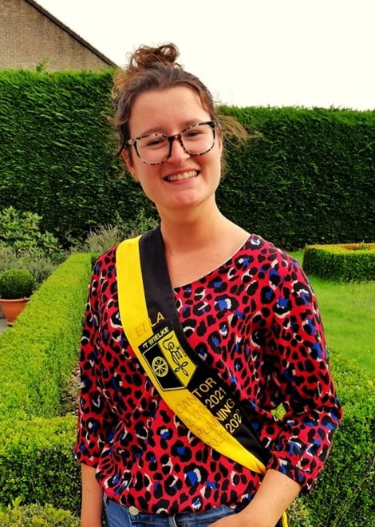
Cantor
Ella De Leeuw

Cultuur
Céline Debusschere
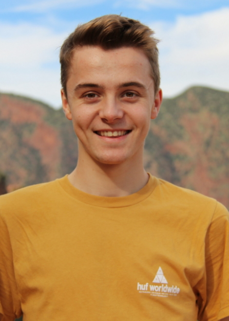
PR
Egon Persyn

Sport
Stijn Vanassche
Propraesidia
AJ 2020-2021
Praeses: Viktor Vandenbulcke
Vice: Alex Vanlauew
Penning: Egon Persyn
Secretaris: Asia Vanderpoorten
Feest: Maxime Taillie
Sport: Viktor Vandenbulcke
Cultuur: Céline Debusschere
PR: Alex Vanlauwe
Schachtentemmer: Tania Gulamrezazadeh
Cantor: Ella De Leeuw
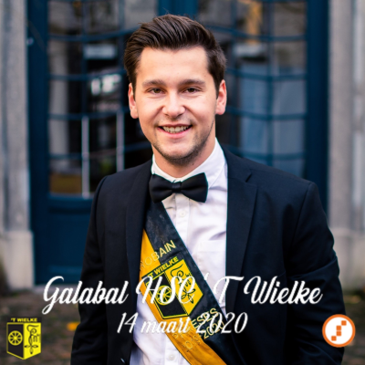
Praeses: Robin Depoorter
AJ 2019-2020
Praeses: Robin Depoorter
Vice: Cas Depoortere
Penning: Janne Devolder
Secretaris: Joelle Lemey
Feest 1: Alice Delannoy
Feest 2: Eline Martin
Sport: Viktor Vandenbulcke
Cultuur: Babs Masschelein
PR: Alex Vanlauwe
Schachtentemmer: Thomas Geldhof
Cantor: Fien Alleman
Zeden: Ruben Vanderheeren
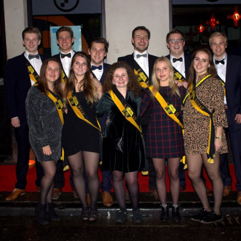
Praeses: Bert Vynckier
AJ 2018-2019
Praeses: Bert Vynckier
Vice: Robin Depoorter
Penning: Niels Blondeel
Secretaris: Fien Alleman
Feest 1: Alice Delannoy
Feest 2: Manou Delanghe
Sport: Cas Depoortere
Cultuur: An Bouckaert
PR: Tim Geldof
Schachtentemmer: Sarah Holvoet
Cantor: Eva Vlaminck
Zeden: Thomas Geldhof
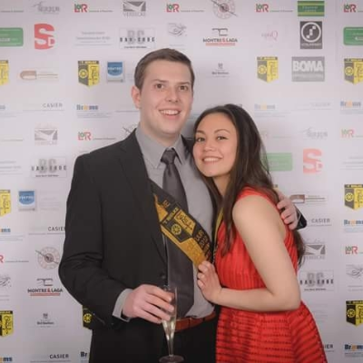
Praeses: Claudia Vanhaverbeke
AJ 2017-2018
Praeses: Claudia Vanhaverbeke
Vice: Lander Vansteeland
Penning: Tibo Rigole
Secretaris: Eva Vlaminck
Feest 1: Iene Deroo
Feest 2: Bert Vynckier
Sport: Cas Decloedt
Cultuur: Sarah Holvoet
PR: Manon Vanhee
Schachtentemmer: Maxime Brabant
Cantor: Gilles Mommerency
Zeden: Christoph Wauters
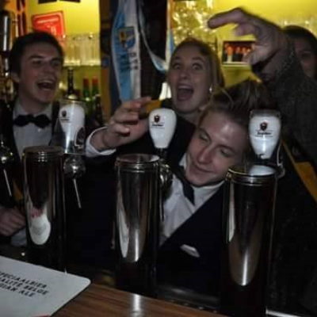
Praeses: Wouter Debakker
AJ 2016-2017
Praeses: Wouter Debakker
Vice: Robbe Lapiere
Penning: Matthias Beckers
Secretaris: Pieter-Jan Tack
Feest 1: Valerie Lewyllie
Feest 2: Judith Dekoninck
Sport: Gilles Mommerency
Cultuur: Louis Vercaempt
PR: Lander Vansteeland
Schachtentemmer: Emiel Vanhaesebrouck
Cantor: Louis Plancke
Zeden: Maxime Brabant
AJ 2015-2016
Praeses: Louis Vermeulen
Vice: Arnoud Deltour
Penning: Matthias Beckers
Secretaris: Clementine Vanoverberghe
Feest 1: Valerie Lewyllie
Feest 2: Astrid Demeulemeester
Sport: Jeroen Vlaminck
Cultuur: Maxime Brabant
PR: Laora Cornelio
Schachtentemmer: Louis Plancke
Cantor: Arnaud Deltour
Zeden: Wouter Debakker
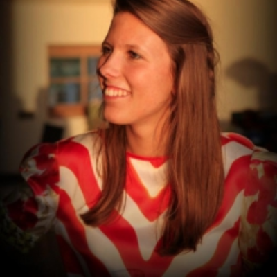
Praeses: Cynthia Ghekiere
AJ 2014-2015
Praeses: Cynthia Ghekiere
Vice: Thibault Degrande
Penning: Annabel Van Slembrouck
Secretaris: Lisa Boutens
Feest 1: Louis Vermeulen
Feest 2: David Vanquaethem
Sport: Arnaud Deltour
Cultuur: Valérie Popelier
PR: Valerie Lewyllie
Schachtentemmer: Dimitri Delbeecke
Cantor: Alexander Casier
Zeden: Thibault Degrande
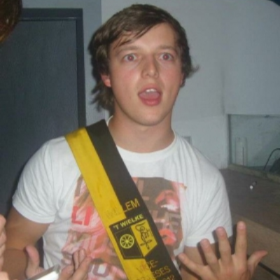
Praeses: Willem Vandamme
AJ 2013-2014
Praeses: Willem Vandamme
Vice: Arne Six
Penning: Thibault Degrande
Secretaris: Lore Logghe
Feest 1: Hannelore Minne
Feest 2: Louis Vermeulen
Sport: Bram Van Weehaege
Cultuur: Lonis Logghe
PR: Cynthia Ghekiere
Schachtentemmer: Isabelle Masschelein
Cantor: Arne Vanwalleghem
Zeden: Laurence Vanhecke
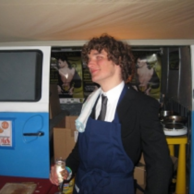
Praeses: Arne Vanwalleghem
AJ 2012-2013
Praeses: Arne Vanwalleghem
Vice: Hannelore Minne
Penning en cantor: Elke Durnez
Secretaris: Lisa Declerck
Feest 1: Willem Vandamme
Feest 2: Simon Serrus
Sport: Wouter Willemyns
Cultuur: Laurence Vanhecke
PR: Isabelle Masschelein
Schachtentemmer: Arne Six
Zeden: Kenny Decruyenaere
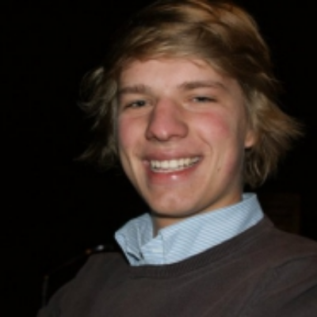
Praeses: Francis Spillebeen
AJ 2011-2012
Praeses: Francis Spillebeen
Vice: Willem Vandamme
Penning: Koen Flament
Secretaris: Elke Durnez
Feest 1: Klaas Bulcaen
Feest 2: Rens Bonnez
Sport: Jens Delrue
Cultuur: Arne Six
PR: Isabelle Masschelein
Schachtentemmer: Arne Vanwalleghem
Cantor: Aäron Ollivier
Zeden: Gaëlle Pattyn
AJ 2010-2011
Praeses: Emilyne Druïne
Vice en zeden: Kenny Decruyenaere
Penning: Julie Fournier
Secretaris: Koen Flament
Feest 1: Francis Spillebeen
Feest 2: Klaas Bulcaen
Sport: Arne Vanwalleghem
Cultuur: Alexander Casier
PR: Aäron Ollivier
Schachtentemmer: Ward Boydens
Cantor: Thomas Vandenberghe
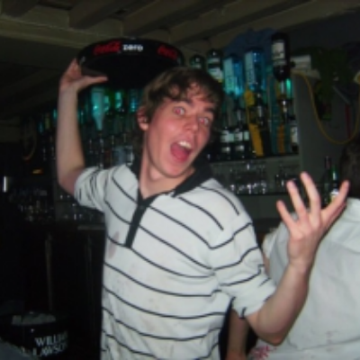
Praeses: Thomas Vandenberghe
AJ 2009-2010
Praeses: Thomas Vandenberghe
Vice: Charline Van Balen
Penning: Julie Fournier
Secretaris en cantor: Emilyne Druïne
Feest: Francis Spillebeen
Sport en Cultuur: Maxime Fournier & Kenny Decruyenaere
PR: Aäron Ollivier
Schachtentemmer: Thomas Vermeulen
Zedenmeester: Stephanie Gevaert
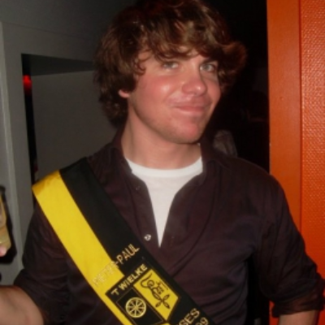
Praeses: Pieter-Paul Casier